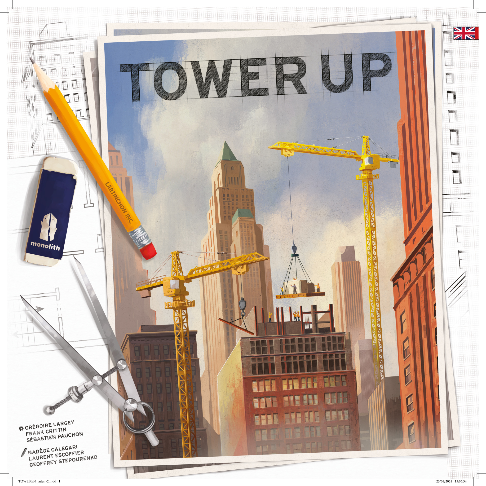
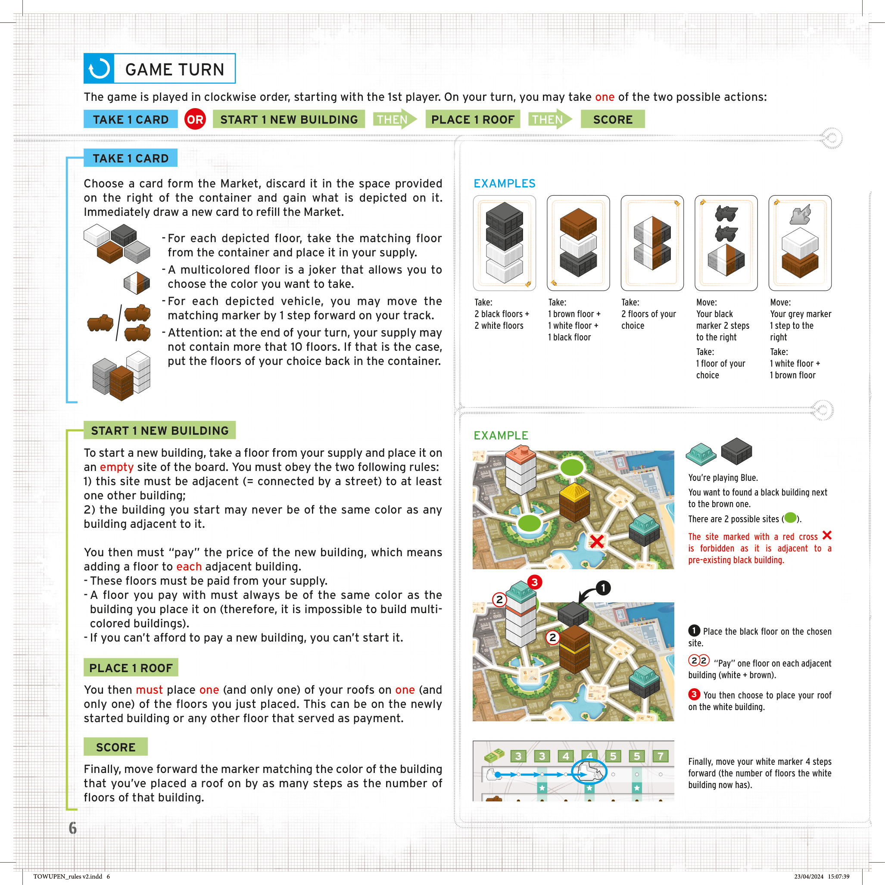
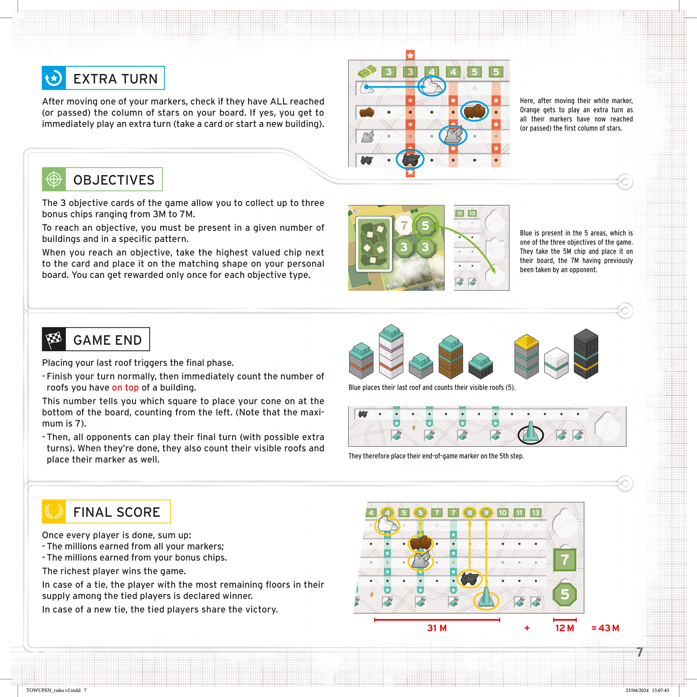
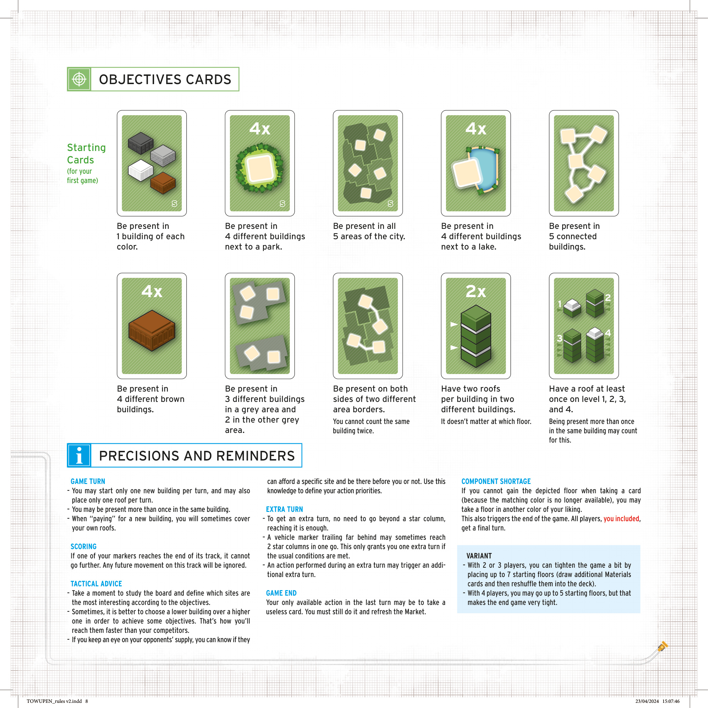

1简介
市中心扩建正如火如荼地进行。你是受命承建所有摩天大楼的建筑公司负责人之一：新建大楼、丰厚奖励，以及——若一切顺利——所有财富！
不过，城市规划相当严苛：每当你要开建一座新大楼，都必须为所有直接相邻的建筑添砖加瓦；而且市议会还有另一条铁律：相邻的两栋建筑永远不能是同一颜色。
你不是唯一参与这个项目的公司，竞争想必十分激烈。想要抢先赢得比赛，你需要仔细规划建造、敢于抓住机会，同时还要尽量减少对手的选择空间。
① 把你的屋顶放到高建筑上；
② 尽可能快地达成城市规划目标；
③ 游戏结束时让你的屋顶占据更多建筑。
这三者并非总能协同，你需要找到三者间的最佳平衡。
2配件
正面 3–4 人；背面 2 人。板面显示 5 个区域的市中心。
板上呈现许多由白色街道网连接的方形建筑工地。
按颜色堆叠形成不同高度的建筑。每色 30 张。
每位玩家 10 个对应颜色，用来标记你在建筑中的出现。
每位玩家一张，标记自己的进度。
让你从公共供应区中拿取楼层加入个人供应区。
展示市议会的当前指令，可能为你赢得奖励标记。
3 种形状 × 3 种价值（7M / 5M / 3M 百万）。
4 色 × 4 个，放在个人板的对应轨道上。
放在个人板底部，表示终局奖励。
楼层堆叠示例
同一栋楼里的屋顶：只要你的屋顶在该建筑中任何一层，就算你「出现」在该建筑中。同一建筑可多次出现；不同玩家也可同时出现。
3准备
- 将游戏板放在桌子中央。2 人局则把板翻面到背面，使用 2 人局半场板。
- 洗混所有材料卡，组成一摞抽牌堆放在容器左侧空间。
- 翻开 3 张卡牌，作为市场展示在容器上。
- 摆 3 个起始楼层：检查 市场 中的卡——
• 每张卡最底部的楼层对应 1 张楼层，从容器取出；
• 把这 3 张楼层放到任意 3 个工地上。
注：若卡片底部的楼层是多色，可任选颜色。 - 把容器（含 4 色屋顶）放在游戏板旁边。
- 每人选一张个人板放在面前；将 4 个交通工具标记放在对应轨道的第 1 格；拿取10 个自己颜色的屋顶；拿 1 个对应的交通锥标记放在一旁。
- 每人从容器拿1 张各色楼层放在个人板前——这是你的起始供应区。
- 把奖励标记按形状和值摆到板上的对应空格。
3 人局：每个形状可省 1 枚 3M；2 人局：只摆 7M 和每个形状 1 枚 3M。 - 将 3 张起始卡（右下角带 ⟨S⟩ 标记）摆在板上对应位置（首次游戏用）。熟悉后，从 10 张目标卡中抽 3 张随机使用。
准备工作就绪！住在最高楼层的玩家为起始玩家。
4游戏回合
游戏按顺时针方向进行，由起始玩家开始。在你的回合中，你必须从以下 2 个动作中选 1 个：
① 抽 1 张材料卡
从市场抽 1 张，立即获得卡上所示内容（楼层 + 车辆前进）。补 1 张到市场。
② 起 1 座新建筑
从供应拿 1 张楼层放到工地 → 为相邻建筑各加 1 张「付款」楼层 → 放 1 个屋顶 → 移动对应色交通工具标记。
5抽 1 张材料卡
从市场选择 1 张卡，弃到容器右侧的弃牌空间，立即获得卡上所示内容：
- 每张所示楼层：从容器取对应颜色的楼层，加入你的供应。
- 多色楼层是万能，可任选颜色。
- 每个所示车辆：可把对应颜色的交通工具标记在自己的轨道上前进 1 步。
立即从抽牌堆补 1 张牌到市场，保持市场始终有 3 张。
6起 1 座新建筑
从你的供应区拿 1 张楼层，放到游戏板上的一个空格工地。必须遵守以下两条规则：
「支付」新建筑的价格
你必须在每一栋相邻建筑上各加 1 张楼层。
- 这些楼层必须从你的供应区付出。
- 付出的楼层必须与所在建筑颜色相同（因此不可能建成多色建筑）。
- 如果无法支付，不能开建该建筑。
【示例】你是蓝方，要在一栋白色和一栋棕色建筑之间起一栋黑色建筑。有 2 个可选工地（标记 ✓）。其中一个旁边已有黑色建筑，因「相邻建筑不能同色」而被禁止（标记 ✗）。
- 把黑色楼层放到选中的工地（新建筑此时为 1 层）。
- 向每栋相邻建筑「付款」各 1 张楼层（白 + 棕）：白色由 3 层增至 4 层，棕色由 2 层增至 3 层。
- 选择把屋顶放在白色建筑上（新建筑或任一付款楼层都可放，这里选较高的白色建筑）。
- 把屋顶所在建筑的对应色——白色——交通工具标记前进 4 步（白色建筑付款后共 4 层）。
你可以在同一栋建筑中出现多次（即放多个屋顶）。
为新建筑「付款」时，可能覆盖你已有的屋顶（这是允许的）。
7放 1 个屋顶
开建新建筑并支付完成后，你必须把你 10 个屋顶中的 1 个（且仅 1 个）放到刚才所放的 1 张楼层上。可以是新建筑本身，也可以是任何 1 张付款楼层。
最后，把对应颜色的交通工具标记在该轨道上前进若干步，步数 = 你放的屋顶所在建筑的总层数。
8额外回合
每当你移动自己某个交通工具标记之后，检查是否所有标记都已到达（或超过）个人板上的星列。如果是，你立即获得一个额外回合（可再抽 1 张卡或再建 1 座建筑）。
一个落后的标记有时会一次性跨越 2 个星列，但这仍只触发 1 个额外回合。
额外回合中的动作可能再次触发额外的额外回合。
9目标卡
3 张目标卡每张可能为你赢得 1 个奖励标记，价值从 3M 到 7M 不等。达成目标的条件：在指定数量的建筑中以特定模式出现。
达成目标后，从卡旁取最高值的奖励标记放在个人板的对应形状空格里。每种目标最多只能领取一次奖励。
10游戏结束
放完最后一个屋顶（你的第 10 个）触发终局阶段：
- 正常完成你的回合，然后立即数你在建筑顶的屋顶数量。这个数字决定你的交通锥放在个人板底部的哪一格（从左数，最大 7）。
- 所有对手还可以继续他们的最终回合（可能包括额外回合）。结束时，他们也数可见的屋顶并放置交通锥。
- 所有人都完成后，汇总：
• 所有交通工具标记前进的百万数；
• 所有奖励标记的百万数。
平局时，剩余供应中楼层最多者赢；仍平局则并列玩家共享胜利。
11战术建议
- 花点时间研究板面，根据目标卡确定哪些工地最值得开发。
- 有时为了更快达成目标，选矮一点的建筑反而比高建筑更好。
- 留意对手的供应区，你可以判断他们能否负担某个工地——决定你的行动优先级。




12补充说明与变体
补充说明
- 每回合限制：每次回合只能开建 1 栋新建筑，每次回合只能放 1 个屋顶。
- 同建筑多屋顶：你可以在同一栋建筑中出现多次。
- 付款覆盖：为新建筑付款时，可能覆盖你自己已有的屋顶。
- 计分：若某个交通工具标记到达轨道末端，不再前进，之后该轨道的移动忽略。
- 额外回合：不需要超过星列，到达即可。一个落后标记一次性跨 2 个星列只算 1 个额外回合。额外回合中的动作可能再次触发额外回合。
- 终局可能抽无用卡：你最后一回合可能只能抽到一张无意义的卡，仍需执行并补市场。
- 组件短缺：若抽卡时所需颜色楼层已用完，可改拿任意其他颜色的楼层。
变体
- 2 或 3 人局：可放置最多 7 个 起始楼层（多抽材料卡再洗回牌堆）。
- 4 人局：可放最多 5 个 起始楼层，但终局会更紧。
13制作信息
游戏设计（游戏 设计）：Frank Crittin、Grégoire Largey、Sébastien Pauchon
项目经理（项目 经理）：Chloé Girodon
产品经理（产品 经理）：Sébastien Pauchon
插画（插画）：Laurent Escoffier、Geoffrey Stepourenko、Nadège Calegari
平面设计（平面设计 & layout）：Laurent Escoffier、Sébastien Pauchon、Nadège Calegari
制作经理（制作 manager）：Benoit Stella（Synergy Games）
校对（校对）：Antoine Prono - Transludis
出版（出版）：MONOLITH 游戏板 游戏
153 Boulevard Haussmann, 75008 Paris - France
英国进口 / 发行：Esdevium Games T/A, Asmodee UK — Hogmoor House, Templars Way, Bordon, Hampshire GU35 9GQ
ⓒ 2024 MONOLITH 游戏板 游戏 | 版本 v2, 2024-04-23
本规则书的简体中文译本以 MONOLITH 游戏板 游戏 2024 年英文版（Tower Up / v2）为权威源。专有名词（游戏名「Tower Up / 楼起」、颜色、人名、出版商、版次）首次出现时附英文括注。